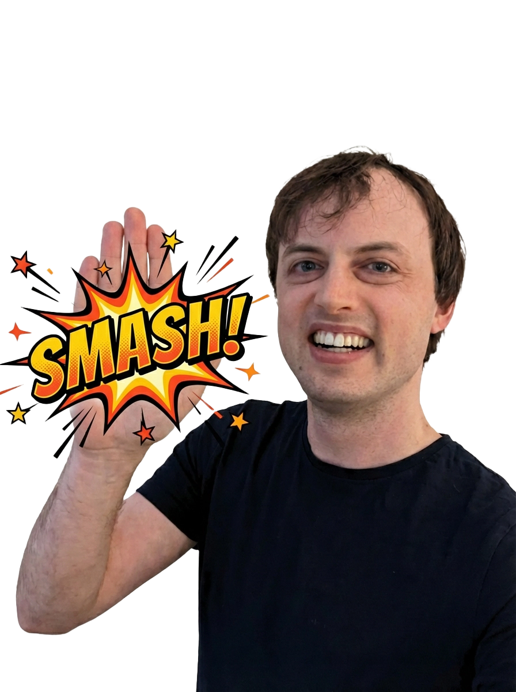

1Snurrande globen
Kontinenter som glider förbi — klassikern.
LADDAR VÄRLDEN…
2Studsande nålen
Kartnålen letar efter rätt plats.
HITTAR PLATSEN…
3Pusslet
Länderna pusslas ihop — precis som dina kartor.
PUSSLAR IHOP…
NSÖV
4Kompassen
Nålen svänger och hittar norr med en studs.
HITTAR NORR…
✈️
5Jorden runt
Flygplanet hinner runt innan kartan laddat.
FLYGER RUNT…
✏️
6Landet ritas
En ö ritas och färgläggs — som dina teckningar.
RITAR KARTAN…
7Radarn
Letar upp länderna, pling pling!
SÖKER LÄNDER…
8Studs-kontinenterna
Tre småländer som studsar otåligt.
SNART KLART…
🛰️
9Satelliten
Satelliten fotar jorden åt dig.
TAR SATELLITBILD…


10Jonas high five
Jonas peppar medan du väntar — appens egna bilder!
HIGH FIVE OM EN SEKUND…